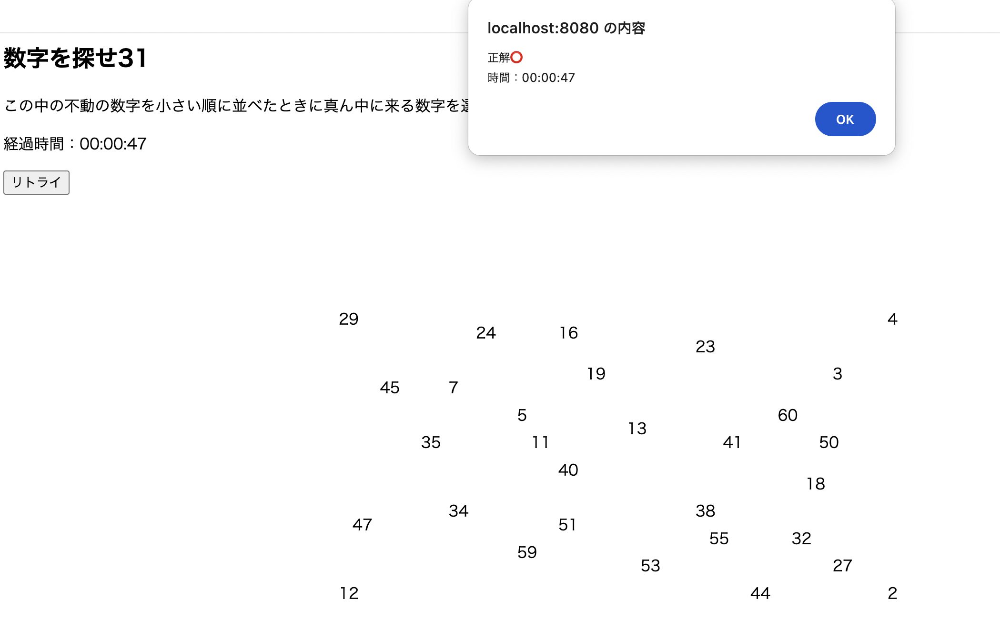

いじわる数字探しゲーム
【内容】
ランダムに選ばれた31個の数字から中間(16番目)を探し出すゲーム。
のように見せかけた「いじわる」な数字探しゲーム。
中央の数字を数えると30個しかありません。
そのことからもう一つ数字があるのではと考えて、
「数字を探せ31」の31も含めることに気付く必要がある。
そしてその31をクリックすると正解というゲームです。
【構成】
31が中間の数字になるように「1〜30」「32〜61」の数字を15ずつ格納する配列を2つ用意
↓
ArrayListのcontainsメソッドを用いて
結果がfalse(数字の被りがない)なら数値を格納するArrayListに格納
↓
1つ前の作品と違い最小,最大は関係なく、答えも決まっているためソートはせずに完成
【工夫や学び】
1つ前の作品では経過時間がinput内にあるのが納得しておらず(そのやり方しかわからず)、
その点を今回改良することができました。
あとは31にカーソルを持っていくとカーソルの形が変わるようにしてみました。
